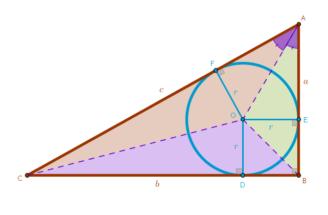

Problem
Prove that for any right triangle with sides \(a\) and \(b\) and a hypotenuse \(c\):
$$a^2 + b^2 = c^2$$
Approach
To prove this theorem we will use the Equation approach in the following way. We will compute the magnitude of a radius of the inscribed circle of an arbitrary right triangle in two different ways and then we will equate the two magnitudes since they refer to the same geometric object.
Let:
$$AB = a$$ $$BC = b$$ $$CA = c$$ $$\angle BAC = \alpha$$The center of the inscribed circle of an arbitrary triangle, not necessarily a right one, is located on the intersection of the bisectors of the internal angles of a triangle - the point \(O\):

Solution I
is based on the observation that:
$$c = AC = AF + CF$$By construction the triangles \(\triangle OFA\) and \(\triangle OEA\) are right and hence the right angles \(\angle OFA\) and \(\angle OEA\) are equal.
The angles at \(A\), \(\angle FAO\) and \(\angle EAO\), are also equal by construction. From Euclid's "Elements" Book 1 Proposition 32 it follows that the remaining internal angles, \(\angle FOA\) and \(\angle EOA\), are also equal. By AAA then these triangles are similar.
From Book 6 Proposition 4 it follows that:
$$AE = AF$$since, by construction:
$$OF = OE = r$$and the side \(AO\) is common.
Then:
$$AB = a = AE + EB =$$ $$AE + r$$ $$\begin{equation}AE = a - r = AF\end{equation}$$Since:
$$\begin{equation}AC = c = AF + CF\end{equation}$$put \(AF\) from (1) into (2):
$$\begin{equation}c = a - r + CF\end{equation}$$We can prove that \(CD = CF\) in the same way we have already proved that \(AE = AF\) and hence:
$$CB = b = CD + DB =$$ $$CD + r$$ $$\begin{equation}CD = b - r = CF\end{equation}$$Put \(CF\) from (4) into (3):
$$c = a - r + CF =$$ $$a - r + b - r =$$ $$a + b - 2r$$ $$\begin{equation} \bbox[#e8e8e8,3pt]{r = \frac {a + b - c}{2}} \end{equation}$$
Solution II
is based on a combination of Equation and Division approaches - the square area of the entire triangle \(\triangle ABC\):
$$\begin{equation} A_{\triangle ABC} = \frac {ab}{2} \end{equation}$$is equal to the sum of square areas of triangles that comprise it:
$$A_{\triangle ABC} = A_{\triangle BOA} + A_{\triangle BOC} + A_{\triangle COA} =$$ $$\frac {ra}{2} + \frac {rb}{2} + \frac {rc}{2}=$$ $$\begin{equation} r \frac {a + b + c}{2} \end{equation}$$since the height of each smaller triangle is equal to \(r\):
Equate (6) and (7):
$$\frac {ab}{2} = r \frac {a + b + c}{2}$$ $$\begin{equation} r = \frac {ab}{a + b + c} \end{equation}$$Now equate (5) and (8):
$$\frac {a + b - c}{2} = \frac {ab}{a + b + c}$$ $$2ab = a^2 + ab + ac + ba + b^2 + bc - ca - cb - c^2$$ $$2ab = a^2 + 2ab + b^2 -c^2$$ $$0 = a^2 + b^2 - c^2$$ $$\bbox[#e8e8e8,3pt]{a^2 + b^2 = c^2}$$what was required to prove.
We remark in passing that the Pythagorean Theorem for some reason has caught the public eye - by now there are more than \(300\) proofs of this theorem available.
\(\blacksquare\)